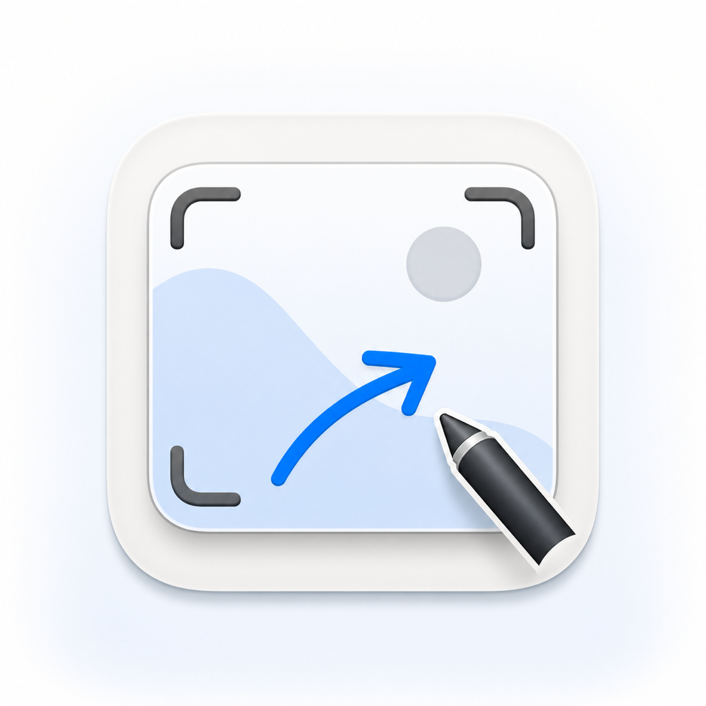

矢印
注目させたい箇所を指し示す。

macOS メニューバー常駐のスクリーンショット注釈アプリ
撮影した画像にその場で注釈を加えて、保存・共有できる。
ScreenshotApp.dmg をダウンロード最新版
macOS 14.0 以降が必要です
5種類の注釈ツールでスクリーンショットを素早く編集できます。
注目させたい箇所を指し示す。
領域を囲って強調する。
説明文を画像上に配置する。
自由に線を引いて描画する。
機密情報をピクセレートで隠す。
GitHub アカウントは不要です。下のボタンから DMG をダウンロードして、4ステップで完了します。
このページの「ScreenshotApp.dmg をダウンロード」ボタンをクリックします。
ダウンロードした ScreenshotApp.dmg をダブルクリックで開きます。
表示されたウィンドウで ScreenshotApp.app を Applications フォルダのアイコンへドラッグ&ドロップします。
Applications から ScreenshotApp を起動します。「開発元を確認できないため開けません」というメッセージが出た場合は、Finder で Control + クリック (もしくは右クリック) し、メニューから 「開く」 を選択してください。
※ 画面収録の許可ダイアログが表示されたら、システム設定 → プライバシーとセキュリティ → 画面収録 で ScreenshotApp を有効にしてください。